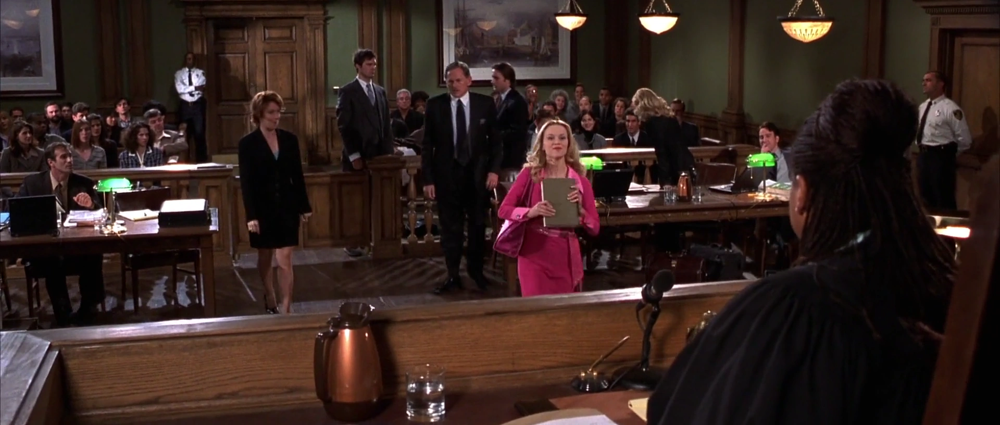
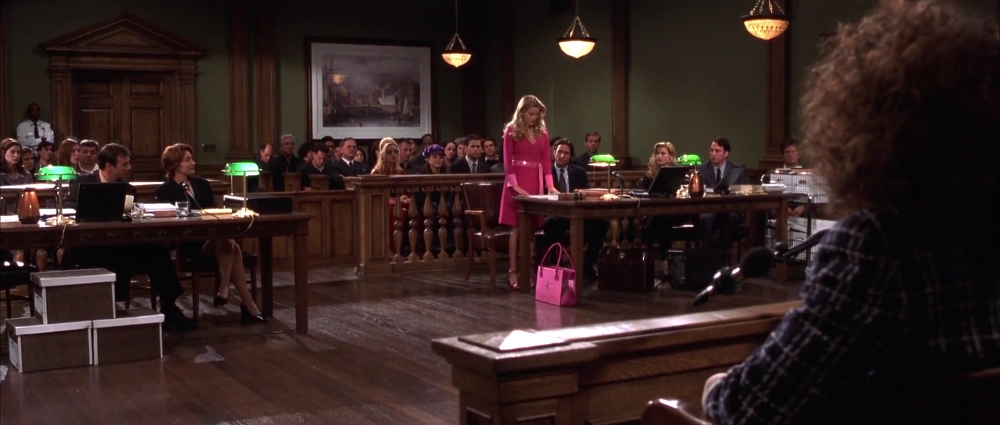

{kind=link}
| Abbrev | Film | Clip Start | Clip Stop | Duration |
|---|---|---|---|---|
| LegallyBlonde | Legally Blonde (2001) | 01:20:26.900 | 01:27:20.900 | 414 |
Legally Blonde
Film Information
Legally Blonde is a 2001 American comedy film directed by Robert Luketic in his feature-length directorial debut, and scripted by Karen McCullah Lutz and Kirsten Smith from Amanda Brown’s 2001 novel of the same name. It stars Reese Witherspoon, Luke Wilson, Selma Blair, Matthew Davis, Victor Garber, and Jennifer Coolidge. The story follows Elle Woods (Witherspoon), a sorority girl who attempts to win back her ex-boyfriend Warner Huntington III (Davis) by getting a Juris Doctor degree at Harvard Law School, and in the process, overcomes stereotypes against blondes and triumphs as a successful lawyer.
All information in this section came from Wikipedia.
Clip Information
Elle, a young female lawyer, takes over the case of Brooke Windham, who is accused of murdering her husband, Hayworth Windham. Elle is questioning Chutney, the daughter of the deceased man.
| Characteristic | Value |
|---|---|
| Format | MPEG-4 |
| File Size | 108.0 MiB |
| Duration | 414.039 |
| Frame Rate | 23.976 |
| Video Width | 1920 |
| Video Height | 816 |
| Video BitRate | 2.1 MB/s |
| Audio Channels | 2 |
| Audio SamplingRate | 48000 |
| Audio BitRate | 129.2 kB/s |


Subtitles
The following wordcloud shows the words used in this clip, scaled by number of occurrences and colored by sentiment (orange = negative, green = positive, grey = neutral or unsure). Note that the words have been stemmed and lemmatized and stopwords have been removed.
{kind=link}
The following figure shows the estimated sentiment (VADER compound score) for each subtitle line (orange = negative, green = positive, grey = neutral or unsure).
{kind=link}
The table below shows all subtitles in this clip with the start and stop time of each subtitle’s appearance in seconds.
| Start | End | Subtitle |
|---|---|---|
| 4.46 | 8.909 | - Excuse you. You're in my way. - She's a student. She can't defend you. |
| 9.06 | 13.668 | Massachusetts Supreme Judicial Court Ruling 3.03. |
| 13.98 | 14.981 | See? |
| 15.90 | 19.700 | - Thank you, David. - Counselors, approach the bench. |
| 20.54 | 22.827 | - You're not going up there. - Oh, yes, I am. |
| 22.98 | 25.824 | I'm sorry. Maybe you didn't hear me. You're fired. |
| 26.18 | 29.627 | Counselors, now! All of you. |
| 34.22 | 35.585 | Elle Woods, Your Honor. |
| 35.74 | 39.426 | Rule 3.03 of Supreme Judicial Court states that a law student |
| 39.58 | 41.981 | may appear on behalf of a defendant in criminal proceedings |
| 42.14 | 44.507 | Your Honor, I have no problem with this. |
| 44.66 | 47.982 | - I do. I'm not allowing it. - But you agreed last night. |
| 48.14 | 50.347 | In your office, when we were discussing my career? |
| 51.70 | 56.945 | The ruling also states that you need a licensed attorney to supervise you. |
| 57.10 | 60.149 | - Mr. Callahan? - That I won't agree to. |
| 60.30 | 62.667 | I'll supervise, Your Honor. |
| 63.70 | 66.180 | Well, then, Ms. Woods, proceed. |
| 66.62 | 68.304 | Thank you, Your Honor. |
| 69.10 | 70.909 | (chuckling) |
| 73.66 | 76.391 | - Hi. - Hi. |
| 82.42 | 83.831 | Enjoy prison. |
| 84.98 | 88.780 | Mrs. Windham, you do realize what you're doing? |
| 88.94 | 90.271 | Absolutely. |
| 92.98 | 97.622 | - Oh, my God. There she is. Elle! - Elle, we came to see your trial. |
| 97.78 | 102.627 | Oh, look, how cute! There's, like, a judge and everything. And jury people. |
| 103.66 | 106.311 | - Vote for Elle! - Ladies, take a seat. |
| 107.26 | 109.388 | Go, girl. |
| 113.46 | 116.623 | Do you swear to tell the whole truth and nothing but the truth, so help you God? |
| 116.78 | 118.464 | - I do. - Be seated. |
| 120.66 | 122.901 | Ms. Woods, you may begin your questioning. |
| 128.02 | 130.591 | First of all, I would like to point out that, |
| 130.78 | 132.623 | not only is there no proof in this case, |
| 132.82 | 137.030 | but there's a complete lack of mens rea, |
| 137.18 | 140.901 | which, by definition, tells us that there can be no crime |
| 141.06 | 143.267 | without a... vicious will. |
| 144.34 | 147.025 | I am aware of the meaning of mens rea. |
| 147.18 | 150.662 | What I'm unaware of is why you're giving me a vocabulary lesson |
| 150.82 | 153.266 | when you should be questioning your witness. |
| 155.46 | 157.030 | Yes, Your Honor. |
| 160.46 | 161.666 | Ms. Windham... |
| 162.38 | 164.508 | When you arrived back at the house... |
| 165.94 | 167.066 | ...was your father there? |
| 167.78 | 169.862 | Not that I saw. But like I said, |
| 170.02 | 172.227 | I went straight upstairs to take a shower. |
| 173.50 | 177.903 | And... when you came downstairs, what happened? |
| 178.30 | 181.543 | I saw Brooke standing over his body... |
| 182.14 | 184.142 | ...drenched in his blood. |
| 189.78 | 194.422 | - But Mrs. Windham didn't have a gun? - No, she'd stashed it by then. |
| 194.58 | 196.389 | Move to strike that from the record, Your Honor. |
| 196.54 | 198.542 | - It's speculation. - So stricken. |
| 201.34 | 202.341 | Go ahead. |
| 207.62 | 210.510 | Ms. Windham, did you hear a shot fired? |
| 211.06 | 212.983 | No. I was in the shower. |
| 214.38 | 215.461 | OK. |
| 215.62 | 219.227 | So... sometime in the 20 minutes |
| 219.38 | 221.064 | that you were in the shower... |
| 221.90 | 223.061 | ...your father was shot? |
| 223.82 | 224.901 | I guess. |
| 226.22 | 229.030 | Your father was shot while you were in the shower... |
| 229.70 | 232.783 | ...but you didn't hear the shot because... |
| 236.62 | 238.543 | ...because you were in the shower? |
| 239.78 | 243.580 | Yes. I was washing my hair. |
| 244.94 | 246.510 | - (barks) |
| 246.66 | 250.346 | - Where is she going with this? - Have a little faith, Gerard. |
| 258.82 | 262.666 | Ms. Windham, what had you done earlier that day? |
| 263.66 | 266.106 | I got up, got a latte, |
| 266.26 | 269.389 | went to the gym, got a perm and came home. |
| 271.78 | 273.987 | Where you got in the shower? |
| 274.70 | 278.864 | I believe the witness has made it clear that she was "in the shower." |
| 279.02 | 281.307 | (all chuckling) |
| 284.98 | 286.789 | Yes, Your Honor. |
| 286.94 | 290.547 | Ms. Windham, had you ever gotten a perm before? |
| 290.98 | 293.950 | - Yes. - How many, would you say? |
| 295.06 | 297.301 | Two a year since I was 12. |
| 298.10 | 299.511 | You do the math. |
| 300.38 | 303.509 | You know, a girl in my sorority, Tracy Marcinko, got a perm once. |
| 303.70 | 306.909 | We all tried to talk her out of it. Curls weren't a good look for her. |
| 307.46 | 309.030 | She didn't have your bone structure. |
| 309.18 | 310.181 | Aww. |
| 310.34 | 312.661 | But thankfully, that same day, |
| 312.82 | 314.822 | she entered the Beta Delta Pi wet T-shirt contest, |
| 314.98 | 316.823 | where she was completely hosed down from head to toe. |
| 316.98 | 319.950 | Objection! Why is this relevant? |
| 320.10 | 323.229 | - I have a point. I promise. - Then make it. |
| 324.02 | 325.670 | Yes, ma'am. |
| 326.42 | 330.106 | Chutney, why were Tracy Marcinko's curls ruined when she got hosed down? |
| 331.86 | 333.749 | - Because they got wet. - Exactly. |
| 333.94 | 336.511 | Because isn't it the first cardinal rule of perm maintenance |
| 336.66 | 338.867 | that you're forbidden to wet your hair for at least 24 hours |
| 339.02 | 340.988 | after getting a perm at the risk of deactivating |
| 341.14 | 345.270 | -the ammonium thioglycolate? - Yes... |
| 345.42 | 348.549 | And wouldn't somebody who's had, say 30 perms before in their life |
| 348.70 | 350.702 | be well aware of this rule? |
| 350.86 | 353.750 | And if you weren't washing your hair, as I suspect you weren't, |
| 353.90 | 357.109 | because your curls are still intact, wouldn't you have heard the gunshot? |
| 357.26 | 359.911 | And if, in fact, you had heard the gunshot, Brooke Windham |
| 360.06 | 363.064 | wouldn't have had time to hide the gun before you got downstairs, |
| 363.26 | 365.945 | which would mean that you would've had to have found Mrs. Windham |
| 366.14 | 369.622 | with a gun in her hand to make your story plausible. Isn't that right? |
| 369.78 | 372.147 | She's my age, did she tell you that? |
| 372.30 | 374.621 | How would you feel if your father married someone your age? |
| 374.78 | 377.306 | You, however, had time to hide the gun, didn't you, Chutney? |
| 377.46 | 379.940 | - After you shot your father. - I didn't mean to shoot him! |
| 380.10 | 382.307 | I thought it was you walking through the door! |
| 382.46 | 384.428 | (crowd exclaiming) |
| 385.66 | 388.982 | Order! Order! Order. |
| 390.70 | 392.941 | - Oh, my God. - Oh, my God. |
| 393.10 | 394.909 | Oh, my God. |
| 396.66 | 398.788 | Bailiff, take the witness into custody, |
| 398.94 | 402.069 | where she will be charged for the murder of Heyworth Windham. |
| 402.90 | 405.506 | In the matter of The State v. Brooke Windham, |
| 405.66 | 407.344 | this case is dismissed. |
| 407.50 | 409.582 | Mrs. Windham, you are free to go. |
| 409.74 | 410.741 | Yes! |
| 410.90 | 413.471 | (all cheering) |
Holistic Ratings
A total of 75 participants watched this film clip and then provided holistic ratings on how the entire clip made them feel. These holistic ratings were completed using five Positive Affect items (i.e., alert, determined, enthusiastic, excited, inspired) and five Negative Affect items (i.e., afraid, distressed, nervous, scared, upset), each rated on an ordinal scale from 0 to 4. The plot below shows the distribution of scale scores (boxplot plus individual ratings).
{kind=link}
Dynamic Ratings
A total of 75 participants watched this film clip and used the CARMA software to provide continuous (i.e., second-by-second) ratings of how it made them feel. These continuous ratings were made on a single emotional valence scale ranging from -4 (very negative) to 4 (very positive).
Chromodoris Plot
We can plot the distribution of all valence ratings per second of the film clip to get a sense of how its emotional tone changes over time. The solid black line represents the mean of all ratings and the yellow, green, and purple ribbons represent the central 50%, 70%, and 90% of the ratings, respectively.
{kind=link}
Inter-Rater Reliability
A Bayesian generalizability study was used to decompose the variance in ratings of this video clip into the following components: timepoint variance (in average ratings of each second, across raters), rater variance (in average ratings from each rater, across seconds), and residual variance (including second-by-rater interactions and measurement error). The lower and upper columns in the table below represent the boundaries of the 95% equal-tail credible interval. Note that we dropped the first 10 seconds of each clip (as rater “warmup” time).
| Component | Term | Estimate | Lower | Upper | Percent |
|---|---|---|---|---|---|
| Rater | Variance | 0.897 | 0.685 | 1.313 | 0.410 |
| Timepoint | Variance | 0.407 | 0.360 | 0.479 | 0.186 |
| Residual | Variance | 0.881 | 0.867 | 0.895 | 0.403 |
From these variance components, we can estimate inter-rater reliability of the ratings. There are many formulations of the two-way intraclass correlation (ICC), but the most relevant to our purposes here is the balanced average-measures consistency formulation or ICC(C,k).
| Term | Estimate | Lower | Upper | Raters | Error |
|---|---|---|---|---|---|
| ICC(C,k) | 0.973 | 0.968 | 0.976 | 75 | Relative |
Below, we can also visualize the posterior distributions of each of these parameters. Values with higher posterior density are more probable.
{kind=link}